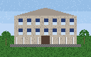

Список сотрудников кафедры с телефонами и комнатами. Сведения обновляются в начале каждого семестра. Ищете химиков? Их телефоны на странице кафедры химии.| Фамилия, имя, отчество | Должность | Телефон | Комната |
|---|---|---|---|
| Петров Пётр Сергеевич | заведующий кафедрой | 4410 | 301 |
| Иванов Иван Иванович | профессор | 4417 | 312 |
| Сидорова Анна Михайловна | доцент | 4421 | 315 |
| Козлов Андрей Николаевич | доцент | 4423 | 318 |
| Морозова Елена Викторовна | ассистент | 4425 | 320 |
| Волков Дмитрий Олегович | инженер | 4430 | лаб. 104 |
Если телефон не отвечает, позвоните секретарю кафедры по телефону 4400 или оставьте записку в комнате 301.
Семинар кафедры проходит по средам в 16:00 в комнате 301. Докладчиков объявляем за неделю.